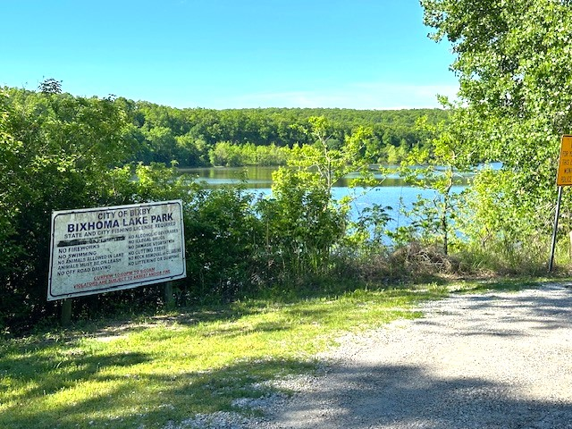

plumber Bixby OK
Bixby plumbers for repairs, remodels, and water problems.
Pacific Plumbing serves Bixby homeowners who want clear plumbing answers for leaks, water heaters, drains, fixture issues, water lines, and planned upgrades.

Plumbing services in Bixby, OK.
If you are searching for a plumber Bixby OK, Pacific Plumbing gives Bixby homeowners an easy path to the right plumbing service page and a fast way to request help.
How Pacific helps Bixby homes.
- Bixby leak detection and water line repair for pressure drops, wet spots, and rising water bills.
- Water heater, drain, sewer, and fixture service for everyday plumbing problems around the home.
- Re-piping, bathroom and kitchen plumbing, and gas line support for bigger projects.
Common Bixby plumbing searches.
Homeowners in Bixby often need a plumber for water heater repair, leak detection, drain cleaning, sewer line help, fixture installation, gas line plumbing, re-piping, and water line repair. Pacific Plumbing connects those needs to dedicated service pages with focused answers.
Bixby plumbing FAQs
Does Pacific Plumbing serve Bixby?
Yes. Bixby is included in Pacific Plumbing's Tulsa metro plumbing service area.
Which Bixby plumbing services have dedicated pages?
Dedicated pages cover water heaters, re-pipes, fixtures, water lines, leak detection, drains and sewer, emergency plumbing, bathroom and kitchen plumbing, and gas lines.
Can I book Bixby plumbing service online?
Yes. You can request service online, or call (918) 771-9078 when the plumbing issue is urgent.
Ready when you are
Get out of a slippery situation today.
Call now or request a service window. Pacific Plumbing will help you understand the problem and choose the right fix.